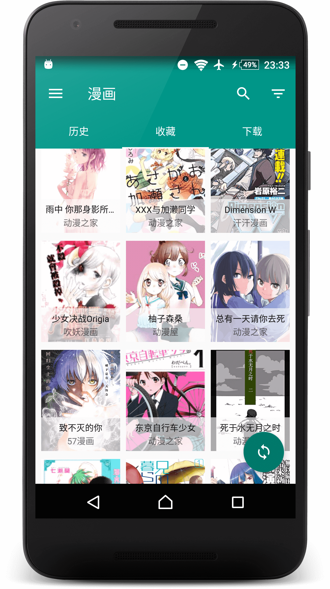

Cimoc 付费决策账本：一款免费开源漫画阅读器，到底值不值得你花时间折腾
Cimoc 没有付费版，但"免费"从来不等于"零成本"——图源配置、换源排错、卡顿处理都是时间投入。我认真算了一笔账，分三类用户告诉你：这钱（时间）花得值不值。
它到底值不值得掏钱？这是我装 Cimoc 第三天、已经花了两个小时在它上面之后问自己的第一个问题。
先把话说在前头：Cimoc 是免费开源的 Android 漫画阅读器，你可以从Cimoc官网了解它的完整定位——没有付费版、没有内购、没有广告。你一分钱不用花就能从官方下载装上、搜漫画、离线看、收藏追更。但"免费"这两个字坑了不少人——它确实不烧钱，但烧时间，而且烧掉的时间量跟你的使用强度成正比，线性增长不带封顶的。
所以这篇账本，我要算的不是"要不要花 X 块钱买 Cimoc 会员"（它根本没有这东西），而是：要不要为了用它，花那个配置图源、换源排错、跟闪退卡顿搏斗的时间？ 这些时间值不值这笔"隐性成本"的账。

先把"定价"摆上台面
Cimoc 的官方定位就是"开源聚合漫画阅读器"，功能清单在Cimoc文档里写得很清楚：
- 搜索聚合：一个关键词同时发往所有启用的图源，结果按来源角标区分，同一部漫画可能返回动漫之家、动漫屋、古风漫画网等多条线路——这是核心功能，免费版完整提供
- 离线下载：章节粒度批量排队，通知栏可看进度，暂停取消随时来，失败任务单独重排——也是免费版完整提供
- 阅读模式：翻页、卷纸、日漫三种模式，横竖屏自由切，长按直接换模式不用退回设置——免费版完整提供
- 收藏与书架：追更提醒、分类管理、本地备份与恢复——免费版完整提供
- 图源自定义：内置数十个图源，社区持续更新新源，也支持自己写图源脚本——免费版完整提供
你看，它没有一个"付费解锁"的钩子藏在功能里。所有东西都是开源协议下放出来的，Github 仓库代码全公开，你甚至可以 fork 一份自己改。
但这里有个容易被忽略的设计哲学：Cimoc 把图源解析能力做在了 App 里，但图源本身是外部的。这意味着它的"免费"是建立在「社区维护图源列表 + 用户自己选源换源」这套机制上的——而这套机制，恰恰是它所有隐性成本的来源。
算账：三档用户，三种时间账单
我把 Cimoc 的用户按使用强度分三档来算这笔"时间账"，每一档都算清楚：免费版够不够、隐性成本多少、替代方案是什么。
轻度用户：每周看 1~3 话，固定一两部追更
这个档位是 Cimoc 最友好的用户群。
你搜一部、收藏、等更新、下载离线看，整个流程顺的话五到十分钟搞定一套固定动作。换源这件事大概率不会发生——追的作品在你启用的第一个源上就能搜到，更新也跟得上。卡顿？你启用的图源少（三五个撑死了），缓存也不会堆，闪退概率接近零。
时间账单：首次安装 + 配置图源约 20 分钟，之后每次使用的额外成本 ≈ 0。一个月下来，隐性成本不超过半小时。
免费版够不够：完全够。所有核心功能你都能用得上，没有任何限制感。
要不要花时间折腾：不需要。按默认配置走，遇到问题再查，别提前优化。
主力用户：每天看 30~60 分钟，追 5~15 部，偶尔挖旧番
这是开始感受到成本的档位，也是我自己目前所在的位置。
典型的场景是这样的：你追了 8 部番，其中 3 部在动漫之家更新、2 部只在古风漫画网有、1 部源挂了你得换另一条线路、还有 1 部搜不到你得换短词重搜。某天晚上打开书架，3 部更新了但其中 1 部加载失败——得进详情页换源，换完源章节列表刷新，再进阅读。
同时你启用了 8~10 个图源，搜索时全部返回结果，列表里同一部漫画可能出现 3 条——你得花几秒分辨哪条是你之前追的、哪条是新冒出来的线路。缓存也开始堆了，三个月没清过，某次打开书架卡了 10 秒才响应。
时间账单：首次配置 30~40 分钟，之后每周额外 15~30 分钟用在换源、清缓存、排错上。一个月下来约 2~3 小时。
免费版够不够：功能上完全够。但"够用"和"顺手"之间，差的就是那每周 20 分钟的折腾。
要不要花时间折腾：这个档位是 Cimoc 性价比最高的区间——花点时间精简图源（留 3~5 个常用源就够了）、记一下清缓存的习惯、把你常用的那几个源摸透，时间成本能砍半。
重度用户：每天刷 1 小时以上，追 20 部+，同时看新番补旧番
到这个档位，Cimoc 的隐性成本开始陡增。
你可能会遇到：图源挂了好几个、搜一部旧番得换 5 个线路才找到完整资源、批量下载一次挂 50 话导致后台长鸣、启用了 15 个图源导致搜索响应变慢。某天 App 闪退了四次，重启手机、清缓存、更新版本四层处理完，你已经花了 40 分钟。
社区 FAQ 里卡顿的第一嫌疑就是"图源太多"——启用 15 个源的搜索开销是启用 5 个源的 3 倍以上，后台更新检查、章节解析同步膨胀。
时间账单：首次配置 1 小时+，每周额外 1~3 小时用在图源维护、排错、性能优化上。一个月下来约 8~12 小时。
免费版够不够：功能够，但你的时间越来越不够。
要不要花时间折腾：到了这个档位，你得认真问自己一个问题——每周花 2 小时跟图源和闪退搏斗，跟换一个"开箱即用"的方案相比，哪个更值？
不付这笔时间钱，有什么别的路
Cimoc 的替代方案分三类，我帮你对比一下隐性成本：
一类：内置图源的收费阅读器。比如某些有官方图源合作的漫画 App，月费 15~30 元。不用自己找图源、换源、排错，点开就能用。代价是功能受限（不能自定义图源、离线配额有限）、而且商业 App 说不上哪天就倒闭了。
二类：同类开源聚合器。国漫为主的有另外几款，图源列表社区维护，但解析能力不如 Cimoc 灵活。隐性成本相似，但社区活跃度和更新速度可能稍慢。
三类：网页端 + 浏览器扩展。直接在浏览器里装个漫画扩展，不用装 App，随开随看。代价是体验割裂、离线能力弱、手机端操作不方便。
怎么选？核心变量只有一个：你每周愿意花多少时间在"漫画阅读器的运维"上。觉得每周花 2 小时优化一个工具是乐趣的人，Cimoc 是天选；觉得工具就该"装上即用、有事再说"的人，花点月费换个省心的方案更划算。
账本总结
说回最开头的那个问题——Cimoc 到底值不值得你花时间折腾？
三类人，三个答案：
- 轻度用户（每周 1~3 话）：闭眼上。免费、开源、功能全，按默认配置走几乎零成本。
- 主力用户（每天 30~60 分钟，追 5~15 部）：值得花时间。精简图源到 3~5 个、养成清缓存的习惯，每周 15~30 分钟的运维成本换一个完全免费无广告的阅读器，这笔账算得过来。
- 重度用户（每天 1 小时+，追 20 部+）：再等等。如果你觉得每周花 2~3 小时排错优化是乐在其中，继续用；如果这时间可以用来看更多漫画，那花点月费换个省心方案可能更划算。
最后说句公道话：Cimoc 能火起来，靠的不是它"省钱"，而是它把"开源"这件事真的做成了——所有功能全开放、图源社区化、无广告无内购。GitHub 上的源码、Gitee 的国内镜像、GitCode 的备份仓库同时维护，就是为了不让这份自由被任何单点风险掐死。它的隐性成本不是开发者藏的付费钩子，而是开源生态本身的代价。你愿意为这份自由付出多少时间，这笔账就得由你自己来算。